1. Viewing inventory
All inventory and its mappings live on the Inventory page, where you can activate/deactivate products and check in-transit stock.
Log in to the web as admin
Go to
.../inventoriesApply filters
Zone, Subzone, Warehouse/Distributor and Inventory Status. Click Download to export the results as a .csv.
Deactivate a product if needed
Click Deactivate against the specific SKU.
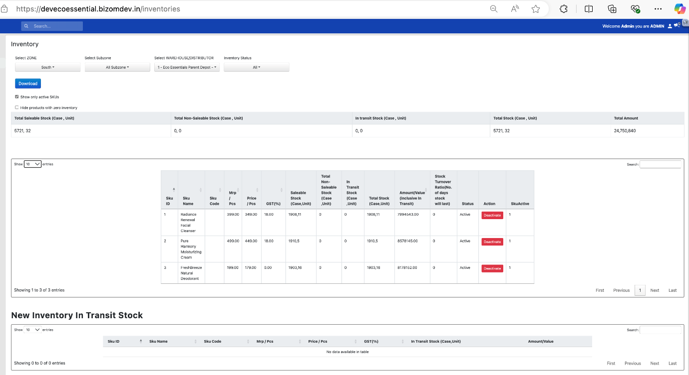
To see transactions for a distributor or inventory location for the day, head to /inventories/inventorytransactionreport.
2. Depot-wise pricing via MDM
You can set a different MRP, price and VAT for the same SKU across different warehouses or distributors, useful when pricing varies by outlet category, distributor, or region.
Before you startBoth the warehouses/distributors and the SKUs involved must already exist in Bizom.
Open the MDM listing
Go to
http://<DomainName>.bizom.in/mdms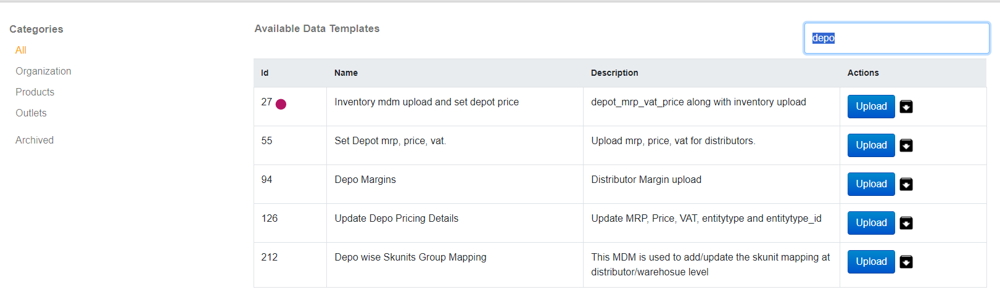
All MDM templates Click Upload on "Inventory MDM upload and set depot price"
Download the sample spreadsheet, fill it, and select it back
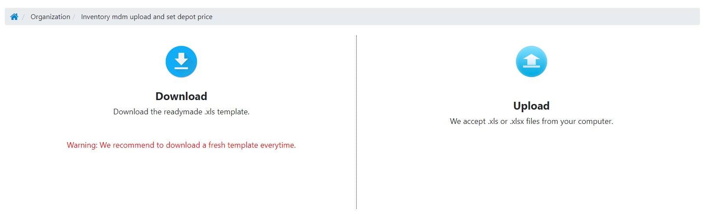
Selecting the filled template for validation Fix any validation errors, then click Save data
Nothing saves until every error is resolved.
View what was uploaded
Click the Inventory tab, pick the zone and distributor, or check
.../inventories/inventorytransactionreportdirectly.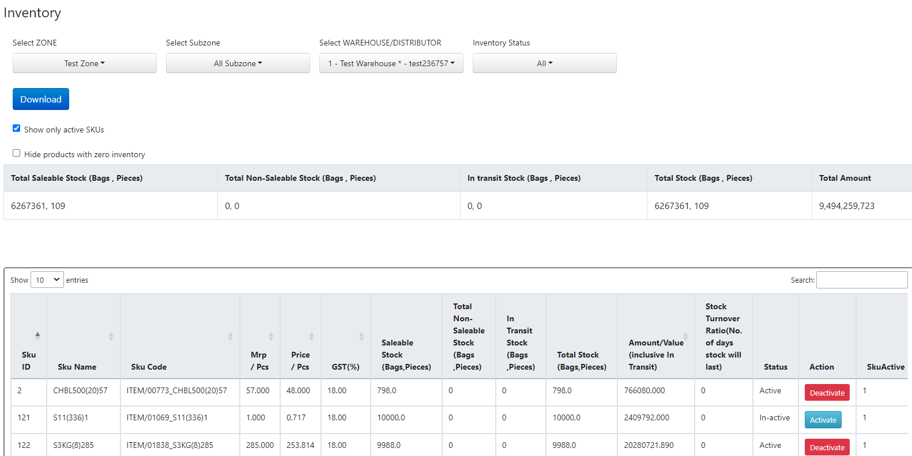
Confirming the upload on the Inventory tab
Key columns for depot-wise MRP & price
| Column | Description |
|---|---|
skunit_id | SKU you're pricing. |
warehouse_id | Warehouse/distributor this price applies to. |
mrp | MRP of the SKU at this warehouse. |
price | Price of the SKU (inclusive of GST) at this warehouse. |
focussku | 1 if this is a focus SKU, else 0. |
availableinventory(cases/pieces) | Stock available, split by cases and pieces. |
batch_id / batch_name | Batch reference, if the SKU is batch-tracked. If you set a batch name, its expiry date is required too. |
Good to know: once an MRP/price mapping is uploaded for a warehouse, it can't be edited by re-uploading, changes to existing mappings will error out with the affected warehouse_id/skunit_id.
Two ways to use this MDM
- New SKU or new warehouse: every time you add either one, upload its inventory so it appears on the order screen (upload as 0 if the actual count isn't known yet, just to make the SKU orderable).
- Different pricing per distributor/outlet type: use the same MDM with
entitytypeset to warehouses, outlet_types, outlet_categories, warehousecategories or warehousebusinesstype, andentitytype IDset to 0 for "all" or a specific ID for one segment.
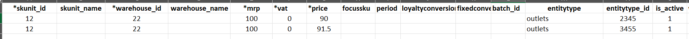
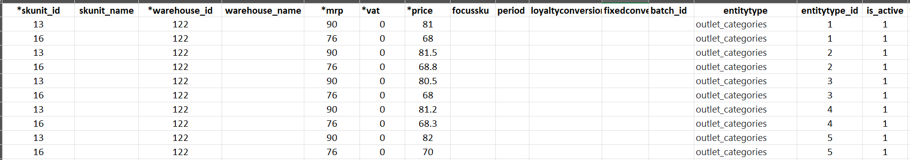
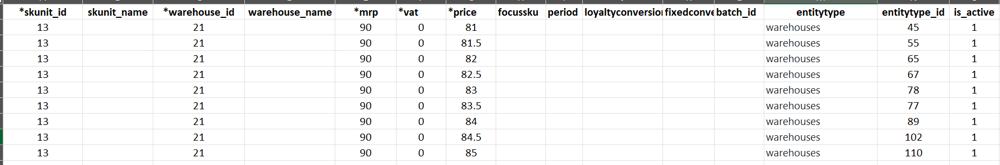
3. Inventory audit
Inventory audit reconciles what Bizom shows against physical stock, for direct/counter sales made outside Bizom, returns received outside Bizom, or stock moving from saleable to non-saleable (damaged, expired, lost).
It tracks four levels of stock at each warehouse: Current, Incoming, Outgoing, and lets you set the Closing stock.
Before you startAdd your audit reasons at /reasons/add using the category "inventory_audit", you'll need to select one to complete an audit.
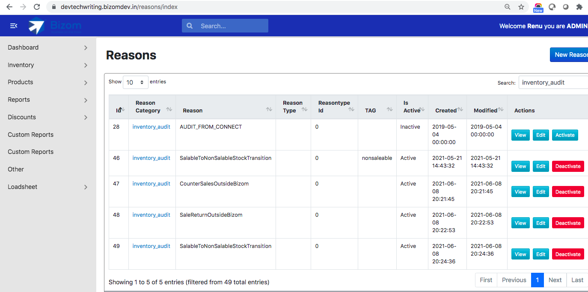
Log in as Admin, Warehouse Manager or Distributor Manager
Go to
.../inventories/inventoryauditA New vs Old UI toggle sits at the top-right, your preference is remembered across logins.
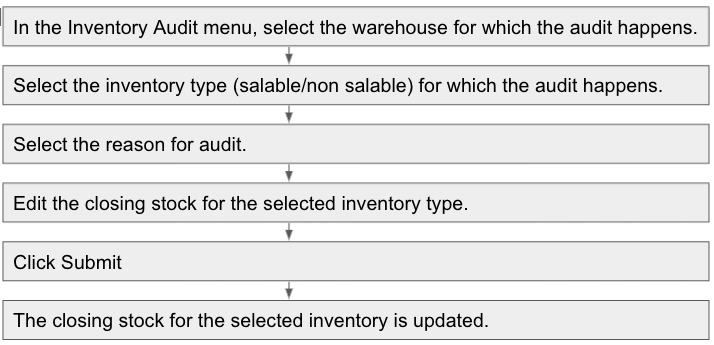
Inventory Audit page Filter and choose Saleable or NonSaleable stock
Zone, Subzone, Warehouse/Distributor. Saleable is selected by default.
Review and update the closing stock per SKU
Increases show in amber, decreases in red. SKUs with multiple batches appear as separate lines. The footer totals lines changed and the overall value impact.
Pick a reason and click Complete Audit
You'll see a confirmation with total variance, SKUs updated, and adjusted lines before it's final.
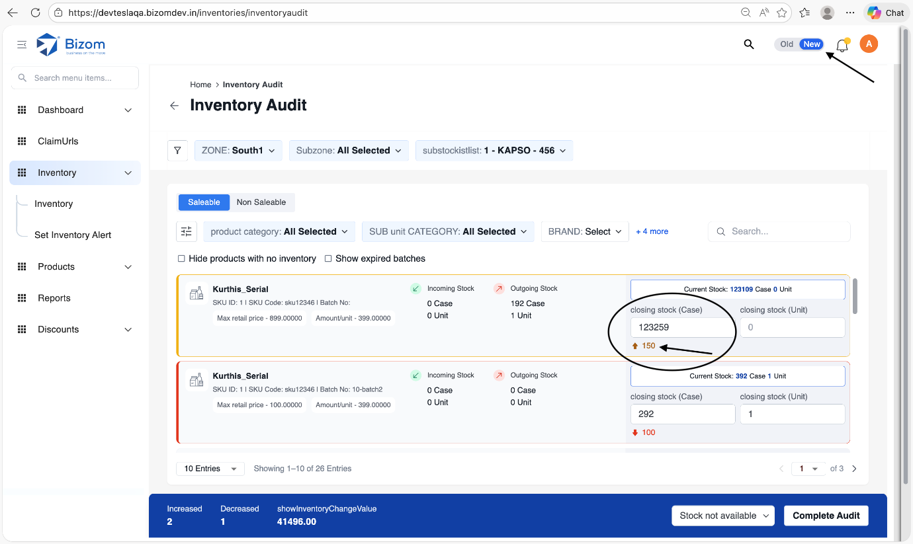
Completing the audit 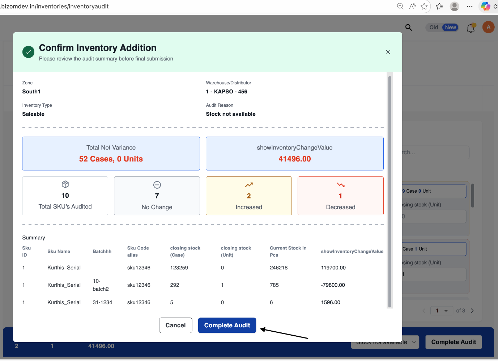
Confirmation summary before finalising
4. Adding inventory
Use this when new stock physically arrives and needs to be added against a batch.
Go to
.../inventories/addThe same Old UI / New UI toggle applies here.
Apply your usual filters (Zone, Subzone, etc.)
Select or create a batch
Quantity can only be entered once a batch is chosen, Bizom will alert you if you try to enter quantity first.
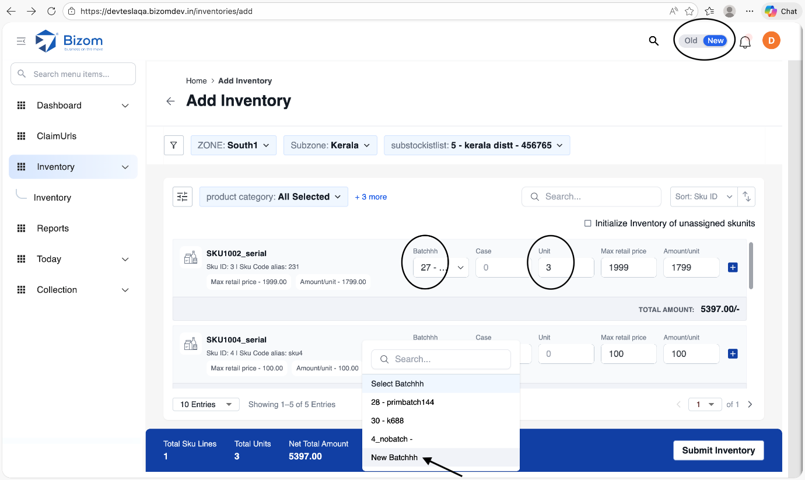
Batch selection and quantity entry Click Submit Inventory
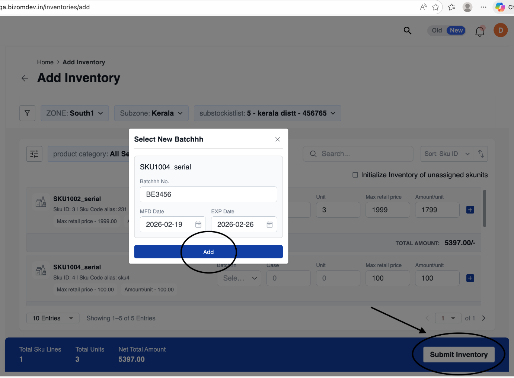
Submit Inventory Confirm the addition
Enter the Invoice ID, confirm the seller (auto-selected if Bill-to-Ship-to is in use), optionally attach a document (PDF, JPG or PNG), then click Submit.
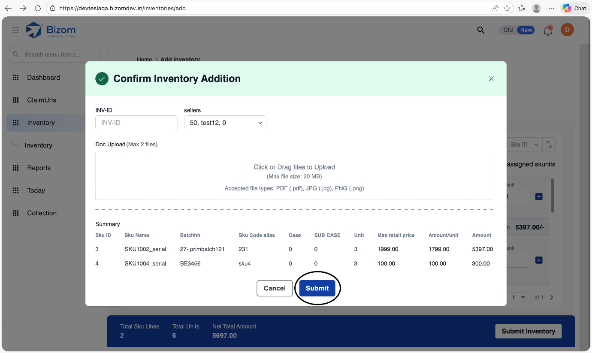
Confirm Inventory Addition
5. Bulk inventory upload via MDM
For onboarding stock across many SKUs and warehouses at once, use the Inventory MDM upload instead of the web form.
Search "Inventory mdm upload" under MDMs
Go to
yourcompanyurl.bizom.in/mdmsDownload the template and fill it in
Column headers are based on what your instance needs.
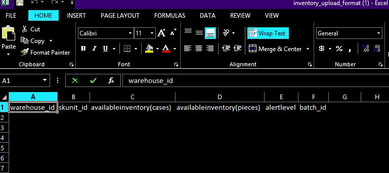
Template headers to fill Group rows by warehouse ID
Each
warehouse_idis unique, list every SKU's details underneath it.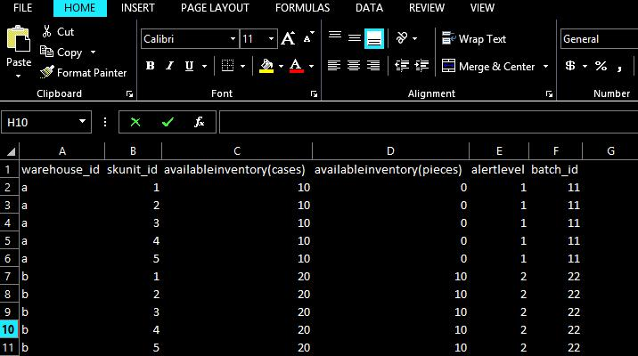
Example: rows grouped by warehouse Save as Excel and upload
Choose the file in the browser and submit.
Key fields for the Inventory MDM
| Field | Notes |
|---|---|
Warehouse_ID | Bizom ID of the warehouse/distributor you're uploading stock for. |
Skunit_ID | Bizom ID of the SKU. |
Availableinventory(cases) | Stock in cases. Upload 0 if the real count is unknown yet, this still makes the SKU orderable. |
Availableinventory(units) | Stock in units. |
Alert Level | Threshold below which a low-inventory warning is shown. |
Is Active | 1 to activate/add the SKU at this warehouse, 0 to deactivate it. |
Was this guide helpful?